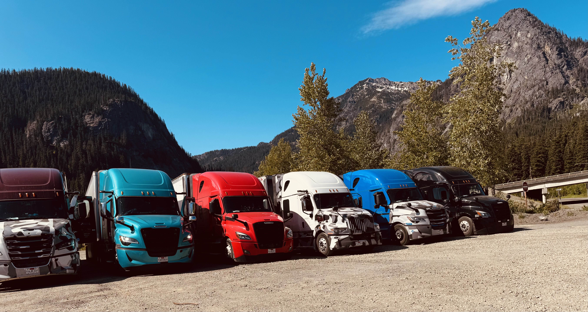

Check out my deep dives into industry.

For my first of two terms in the UT Engineering Co-Op Program, I was hired to join the Powertrain Systems Integration team at the Volvo Trucks North America headquarters in Greensboro, NC. My primary role was centered on troubleshooting powertrain-related fault codes by collecting vehicle data and conducting root cause analysis across hardware components, electrical harnesses, and software logic. I frequently used ATI Vision and Vector CANalyzer to interface with the truck’s CAN buses, extract sensor and circuit data, and trace faults through Simulink-based system logic. Depending on the issue, I also performed hands-on tasks, like swapping sensors, tracking down leaks, and even using a multimeter to verify voltage and current values in key circuits.
Additionally, during my team's daily stand-up meetings, I continued to notice how much useful data my team collected daily, yet struggled to keep track of as projects and tasks grew. Having an organized backlog of data would enable my team to compare current problems to similar previous issues, which would greatly help our troubleshooting efforts and reduce the time needed to do so. Using Python, I built a tool that stores key signals in .pkl files and utilized common libraries like Pandas, NumPy, tkinter, and matplotlib to generate clear, side-by-side comparisons across trucks and software versions. This tool significantly accelerated our root cause analysis efforts, as it helped cut troubleshooting time by more than half by helping us identify patterns and reference prior issues as we investigated issues.
If you'd like to read more about my experience at Volvo, you can view my first term's academic report for more in-depth project details.